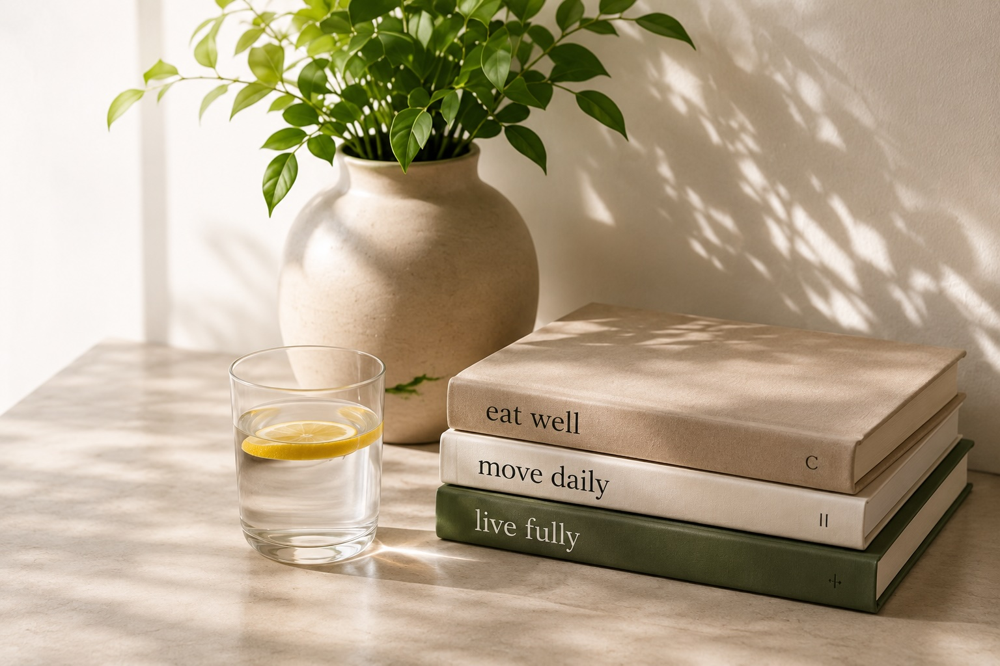

RESOURCES
Learn, explore,
and use what helps.
Evidence-informed health education, practical tools, activities, and self-exploration in one place. Start with what you need right now.
EXPLORE RESOURCES ↓
CHOOSE A WAY IN
Resources are more than articles.
Read when you want to understand something, try an activity when you want to interact with an idea, or use a practical tool when you need something concrete.
Understand the science
Articles and explainers that make health information easier to understand without flattening the evidence.
ExploreLook at your own health
Assessments and self-exploration activities that help you notice what matters to you.
UsePut something into practice
Recipes, guides, practical examples, and other resources you can actually use.
FEATURED
Start with something useful.
These are real resources already available on My Simple Health, not placeholder cards.
 Nutrition · Learn
Nutrition · LearnBalanced Eating
A practical look at balance, variety, adequacy, and moderation without turning eating into rigid rules.
 Sleep · Learn
Sleep · LearnSleep Hygiene
Simple, evidence-informed habits that can support sleep quality, consistency, and restorative rest.
Movement · LearnSmall Steps, Big Impact
Explore how everyday movement can support health without requiring an all-or-nothing exercise plan.
 Prevention · Learn
Prevention · LearnPreventive Health
Understand screening, prevention, and the role of routine care in long-term health.
 Wellbeing · Learn
Wellbeing · LearnSmall Ways to Support Wellbeing
Realistic ways to support how you feel, function, recover, and move through everyday life.
 Nutrition · Use
Nutrition · UseEveryday Recipes
Browse practical meals designed for normal life, not a perfect eating routine.
BROWSE BY TOPIC
Find the area you are curious about.
Topics organize the library. They no longer need to be a separate destination from Resources.
More activities, reflections, and practical tools can be added here as they are built. They do not need new top-level navigation items.